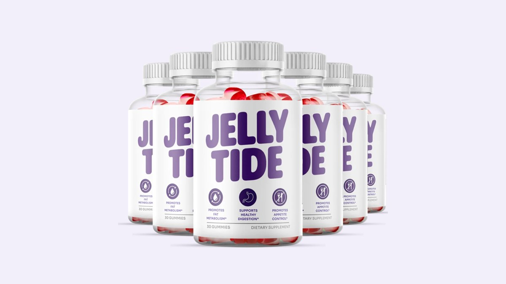
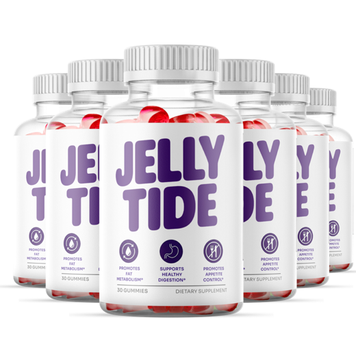
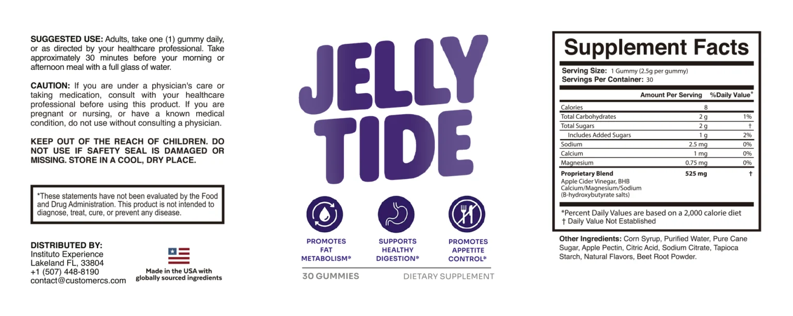
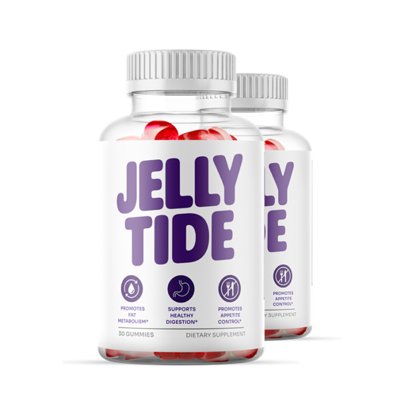
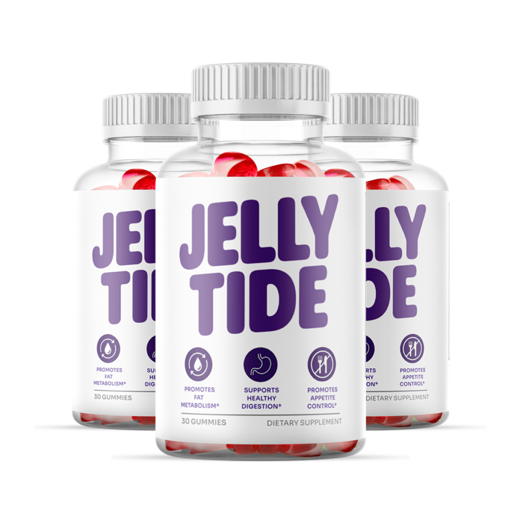

JellyTide Reviews 2026: What the Jelly Tide Label Actually Supports
JellyTide promises help with fat metabolism, digestion and appetite from one gummy a day. We put each of those claims next to the Supplement Facts panel and the research.

Key takeaways
- JellyTide is a once-a-day gummy built on a 525 mg proprietary blend of apple cider vinegar and BHB salts, with 8 calories and 2 g of sugar.
- It's the same formula as Gumitide. Same panel, same other ingredients, same distributor in Lakeland, Florida. Only the branding differs.
- The digestion and appetite claims are thin. Nothing on the label is a digestive enzyme, probiotic or meaningful dose of fiber.
- Doses can't be checked. The blend total is printed, but not how much is vinegar and how much is BHB.
- Fair use: a pre-meal habit cue. The 60-day guarantee on official orders lets you test that without much risk.
JellyTide is an apple cider vinegar and BHB gummy, one a day before a meal, sold for fat metabolism, digestion and appetite. In our JellyTide review, the label was clear but the blend is small and unsplit, and it matches Gumitide exactly. Expect a pre-meal routine, not weight loss. Diet and activity do the real work.
Searches for "jelly tide" and "jellytide reviews" mostly turn up ad copy and recycled press releases. This page does something narrower and, we think, more useful. We read the bottle, checked each claim on the front against what's printed on the back, priced it per day, and listed who shouldn't take it. We don't publish star ratings or customer quotes, because we can't verify them.

JellyTide: check today's price
An apple cider vinegar and BHB gummy for appetite support, one a day. Sold only on the official site, with a 60-day money-back guarantee.
See the official price →What is JellyTide (Jelly Tide)?
JellyTide is a dietary supplement sold as a chewable gummy. A bottle holds 30 gummies, and the directions say to take one a day, about 30 minutes before your morning or afternoon meal, with a full glass of water. That makes one bottle a 30-day supply.
The front of the bottle carries three claims: promotes fat metabolism, supports healthy digestion, and promotes appetite control. Like all supplement structure-function claims, they carry an asterisk pointing to the FDA disclaimer. The product is distributed by Instituto Experience of Lakeland, Florida, and labeled as made in the USA with globally sourced ingredients.
You'll see it spelled both ways online. JellyTide and Jelly Tide are the same product. Gumitide is a different name on the same formula, which we'll come to.
What's on the JellyTide label?

Each 2.5 g gummy contains 8 calories, 2 g of carbohydrate, 2 g of total sugars (1 g of it added), 2.5 mg of sodium, 1 mg of calcium and 0.75 mg of magnesium. The active part is a 525 mg proprietary blend of apple cider vinegar and BHB, listed as calcium, magnesium and sodium beta-hydroxybutyrate.
The rest of the gummy is corn syrup, purified water, pure cane sugar, apple pectin, citric acid, sodium citrate, tapioca starch, natural flavors and beet root powder. That's it. No caffeine, no herbal extracts, no second blend.
We like the short list. We don't like the word "proprietary." Because the split between vinegar and BHB isn't printed, nobody can compare the dose of either one with the amounts used in research. That's legal and common, and it's still the single biggest limitation of this label.
Is JellyTide the same as Gumitide?
Yes, as far as the label shows. We read both bottles side by side. The Supplement Facts panels match line for line: same serving size, same 525 mg blend, same calories, sugar and minerals, same other ingredients in the same order. The directions and caution text are word for word the same, and both name Instituto Experience in Lakeland as the distributor.
What differs is the packaging and the pitch. Gumitide calls itself weight management support. JellyTide leads with fat metabolism, digestion and appetite. Same gummy, different headline. Our Gumitide vs JellyTide comparison has the panels in a table, and our Gumitide review covers the other brand on its own terms.
Why sell one gummy under two names? We don't know the company's reasons, and we won't guess at them as fact. It's a common pattern in online supplements, where one formula can be marketed to different audiences with different messages. For you as a buyer, the practical point is simple. Judge the gummy, not the name, and don't pay more for one brand thinking it's a stronger version.
Do JellyTide's three claims hold up?
Here's each claim on the front of the bottle, what in the formula could plausibly support it, and what the research says.
| Front-label claim | What on the label could relate | What the evidence says |
|---|---|---|
| Promotes fat metabolism | BHB salts; apple cider vinegar | BHB salts raise blood ketones briefly but don't make you burn body fat. Vinegar trials showed small weight changes at 15 to 30 ml a day, far above one gummy. |
| Supports healthy digestion | Apple cider vinegar; apple pectin | No digestive enzymes or probiotics on the label. Pectin here is a gelling agent, and one 2.5 g gummy can't hold much fiber. |
| Promotes appetite control | Apple cider vinegar; pre-meal glass of water | Some vinegar studies found slightly lower intake, partly linked to nausea. Water before meals has modest evidence of its own. |
The fat metabolism claim is the weakest. Ketones from a supplement are fuel your body burns instead of its own fat, and ketones also slow the release of fat from fat tissue. That's close to the opposite of the marketing image. And at the tiny mineral levels on this label, the BHB portion looks very small anyway. Our page on whether JellyTide works goes through the dose arithmetic.
Digestion is the vaguest claim. Apple cider vinegar has been studied for slowing stomach emptying and softening the blood sugar rise after a starchy meal, mostly at tablespoon-sized doses. That's a real effect at that dose, but it isn't what most people mean by "healthy digestion," and there's nothing else on the label aimed at the gut.
What are the pectin and beet root powder doing in there?
We get this question because some ad copy treats every ingredient as an active. On this label, apple pectin, tapioca starch and citric acid are standard gummy-making ingredients. Pectin gives the chew its texture. Citric acid and sodium citrate adjust tartness and acidity. Beet root powder is a common natural colorant.
Pectin is a soluble fiber, and soluble fiber in meaningful amounts can help with fullness. But the carbohydrate line on the panel is 2 g per gummy, and all 2 g are listed as sugars, so whatever pectin is there isn't adding enough fiber to register on the label. If fiber for fullness is what you're after, a bowl of oats or a pear does far more.
How much does JellyTide cost?
One gummy a day and 30 gummies a bottle means one bottle per month. These are the prices published on the official order page at the time of writing. Check the page for the current figure, since prices in this category change.
| Pack | Price per bottle | Total | Shipping | Cost per day |
|---|---|---|---|---|
| 2 bottles (60 days) | $79 | $158 | + $9.99 | About $2.63, plus shipping |
| 3 bottles (90 days) | $69 | $207 | Free in the US | About $2.30 |
| 6 bottles (180 days) | $49 | $294 | Free in the US | About $1.63 |

2 Bottles · Starter $79/bottle Check Availability → + $9.99 shipping 6 Bottles · Best Value $49/bottle Claim Discount → Free US Shipping
3 Bottles · Popular $69/bottle Claim Discount → Free US ShippingPrices shown are the manufacturer's published rates at the time of writing and can change without notice.
All three are one-time charges with no subscription. Our advice on pack size is simple: start small. Whether a pre-meal gummy helps you eat a bit less becomes clear within a few weeks. If it does, you can reorder. Buying six bottles up front only makes sense if you've already used it and liked it.
JellyTide refund policy and where to buy it
JellyTide orders placed through the official checkout come with a 60-day money-back guarantee. Read the refund steps on the order page before buying, save your confirmation email, and set a reminder around day 45 so you have time to decide.
Is JellyTide on Amazon? You may see listings there or on other marketplaces, but those sellers aren't the official channel, and their orders aren't covered by the official guarantee. Search results also include lookalike sites with similar names. Check the web address before you enter card details.
JellyTide side effects and who should skip it
At 8 calories and 2 g of sugar, with no stimulants, JellyTide is unlikely to cause much trouble for most healthy adults. Mild stomach discomfort is possible with anything acidic on an empty stomach, which the glass of water helps with. The label asks anyone who takes medication, is under a doctor's care, is pregnant or nursing, or has a medical condition to check with a physician first.
- Diabetes medication or insulin: vinegar has been studied for after-meal glucose, so tell your doctor before adding it.
- Gastroparesis or slow stomach emptying: vinegar may slow emptying further at larger doses. Ask first.
- Diuretics or heart medications such as digoxin: heavy vinegar use has been tied to low potassium. A gummy is unlikely to matter, but your doctor should decide.
- Strict sugar limits: 2 g a day is small, but it counts.
- Kids: it looks and tastes like candy. Store it out of reach.
Ongoing bloating, reflux or changes in bowel habits are worth a doctor's visit rather than a supplement. Our guide to the gut-brain connection covers some of the habits that do affect digestion, and the energy and metabolism hub collects our pages on weight, food and activity.
What do most JellyTide reviews online get wrong?
A lot of the pages ranking for "jellytide reviews" are written by affiliates working from the seller's talking points. That's not automatically bad, since we're an affiliate too, but it shows in a few repeated mistakes you can learn to spot.
- Listing ingredients that aren't on the bottle. Some pages add green tea, garcinia or pomegranate. The JellyTide panel has none of them.
- Inventing per-ingredient doses. If a page tells you exactly how many milligrams of BHB are in each gummy, ask where it got that number. The label doesn't say.
- Promising pounds and timelines. No study of this gummy exists, so any claim like a set amount of weight in a set number of weeks is made up.
- Calling it keto without the diet. Ketosis comes from cutting carbs or fasting. A gummy doesn't change that.
- Celebrity or TV show endorsements. Fake celebrity tie-ins are a long-running pattern in this category. Treat them as a warning sign.
A good test for any review, ours included: does it show you the label, and does what it says match the label? If the answer is no, move on.
There's a simpler check, too. Look at whether the page ever tells you who shouldn't buy the product. Every honest review of a weight supplement has someone it would steer away, whether that's a person on diabetes medication, someone expecting fast results, or someone who'd do better spending the money on groceries. A review with no downsides is an ad.
JellyTide reviews: pros and cons
| What works in its favor | What counts against it |
|---|---|
| Simple label, no stimulants or herbal extras | Proprietary blend; vinegar and BHB amounts unknown |
| Low calorie, low sugar per gummy | Fat metabolism claim isn't supported by how BHB works |
| Once-a-day routine that pairs with a glass of water | No enzymes, probiotics or real fiber behind the digestion claim |
| 60-day guarantee on official orders, no subscription | Identical to Gumitide, so the brand name adds nothing |
Our verdict: is JellyTide worth it?
JellyTide is an honest-looking gummy with marketing that runs ahead of its dose. The label doesn't support meaningful fat burning, and the digestion claim has very little behind it. The appetite angle is the most believable one, and even that rests mainly on the routine of a gummy and a glass of water before you eat.
Who is it for, then? Someone who wants a small, low-calorie ritual before lunch, dislikes liquid vinegar, and understands they're buying a habit tool rather than a metabolism fix. Who isn't it for? Anyone hoping it will replace diet changes, anyone managing blood sugar with medication who hasn't asked their doctor, and anyone who already owns a bottle of Gumitide, since it's the same gummy.
If that routine appeals to you, a short trial with the guarantee is a low-risk way to find out. If you want changes you can see on the scale, the dependable list hasn't changed: protein and vegetables at each meal, fewer sweet drinks, daily walking and enough sleep. A gummy can sit beside those. It can't stand in for them.
JellyTide: check today's price
An apple cider vinegar and BHB gummy for appetite support, one a day. Sold only on the official site, with a 60-day money-back guarantee.
See the official price →Frequently asked questions
How do you take JellyTide?
One gummy a day, about 30 minutes before your morning or afternoon meal, with a full glass of water. That's the label direction for adults unless a healthcare professional advises otherwise.
Does JellyTide taste like vinegar?
It's a sweetened, flavored gummy made with cane sugar, corn syrup and natural flavors, so most of the sharp vinegar taste is masked. That's one of the main reasons people choose a gummy over liquid vinegar.
Is JellyTide vegan or gelatin free?
The label lists apple pectin and tapioca starch as the gelling and texture ingredients, and no gelatin. The bottle doesn't carry a vegan certification, so contact the company if that matters to you.
Can I take JellyTide and Gumitide together?
There's no reason to. They have the same Supplement Facts panel, so taking both just doubles the same gummy and the sugar. Pick one.
Is JellyTide safe for older adults?
For most healthy older adults, a low-dose gummy like this is unlikely to cause problems. But older adults are more likely to take medications for blood sugar, blood pressure or heart conditions, so check with a doctor or pharmacist first.
Will JellyTide help with bloating?
There's no good evidence for that. The label has no digestive enzymes, probiotics or meaningful fiber. Persistent bloating is worth discussing with a doctor.
Is Jelly Tide a scam?
It's a real product with a printed label, a named distributor and a published 60-day guarantee on official orders. The concern is the marketing, which implies more than a 525 mg blend can deliver, not the existence of the product.
Want to test JellyTide with the guarantee?
One gummy a day, 8 calories, with a 60-day money-back guarantee on official orders. Check the current pack prices on the official page.
See JellyTide's official price →Related: Gumitide review · The gut-brain connection · Sugar and brain fog